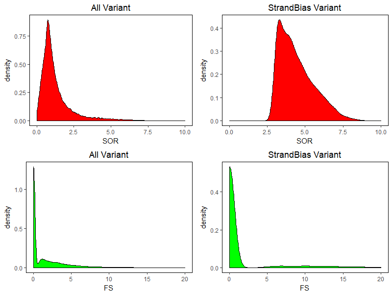

NA12878 全外显子数据分析结果比较
一直都比较有兴趣分析 human DNA 变异，参照 gatk 流程分析了 NA12878 的全外数据，正好有参考变异集，比较下分析准确性，也好参数调整优化之类，吧吧吧，下面就是一些详细步骤粘贴整理
NA12878.vcf 处理
1 | wget -c ftp://ftp-trace.ncbi.nih.gov/giab/ftp/data/NA12878/Garvan_NA12878_HG001_HiSeq_Exome/project.NIST.hc.snps.indels.vcf |
vcf 处理
ref: https://software.broadinstitute.org/gatk/documentation/article.php?id=2806
1 | SNP |
compare use bcftools
1 | bcftools isec NIST7035.filter.vcf.gz ref.NIST7035.hc.snps.indels.vcf.gz -p bcftools |
不考虑snp、indels过滤情况下，计算假阳性、假阴性率。
假阳性: 3863/54077 = 7.14 %
假阴性: 2131/54077 = 3.94 %
哈哈哈哈，瞎了，没法看的样子。还是考虑下变异过滤结果吧
假阳性: 1334/54077 = 2.46 %
假阴性: (2131+51946-47143)/54077 = 12.82 %
更加让人没话说，这个假阴性太感人，过滤标准不太合适啊
1 | 先看被过滤掉的这部分阴性 |
过滤掉位点最严重的两项分别是StrandBias, snp_Filter，对应过滤指标分别为FS > 60.0 || SOR > 3.0, QD < 2.0 || MQ < 40.0 || MQRankSum < -12.5，转换vcf文件到tab格式（脚本：github），对其中一些指标进行分布检查。
先看 StrandBias，对 FS, SOR 两个参数分析，分布结果如下，可看出被过滤的位点基本上都是由于 SOR 参数（作图时FS>60无显示），与 NA12878 变异集相比，需调整 SOR 临界值到更大水平。

再看 snp_Filter 对应的QD < 2.0 || MQ < 40.0 || MQRankSum < -12.5，其中 MQRankSum 对应67个位点，QD 对应557个位点，MQ 对应 1168 个位点，看出 MQ, QD 标准需要进行调整。
以现在质控指标对文件0001.vcf 2131 变异质控，QD 过滤掉949，MQRankSum 过滤掉14，MQ 过滤掉195，FS 过滤掉135，根据这部分参考变异集质量指标，同样 QD, MQ, FS 参数需要进行调整。
另，vcftools 也可以很方便进行两个 vcf 文件的比较，还没 bcftools 对 vcf 文件必须排序、index的要求，输出结果也相应不同，因为我需要看阳性、阴性位点是否被过滤以及过滤情况，就不再用 vcftools 整理了，具体命令可参考如下：
1 | http://vcftools.github.io/ |
质控参数调整思路
根据质控结果比较来看，参控参数都还需要进行再调整，一个初步的参数调整思路是，对高质量变异集各项质控指标分布进行统计，然后进行阈值选择；或者对 NA12878 全基因组水平的变异进行 VQSR 分析，统计高质量变异位点质控指标分布